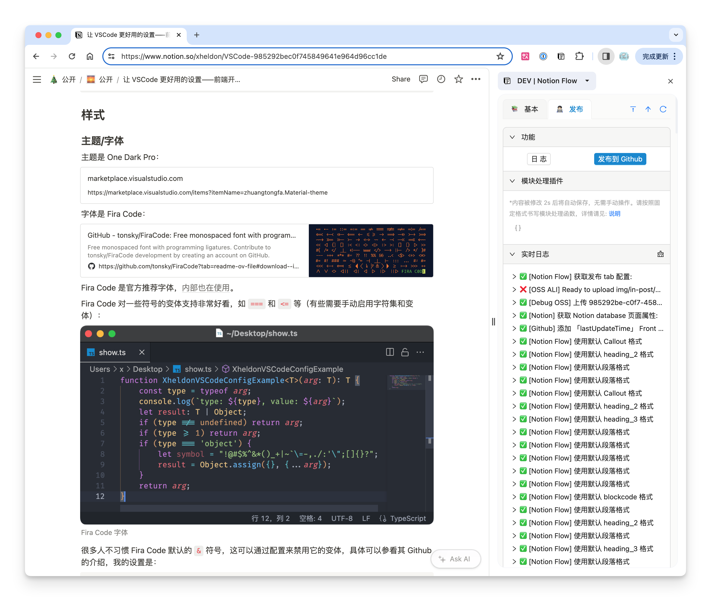
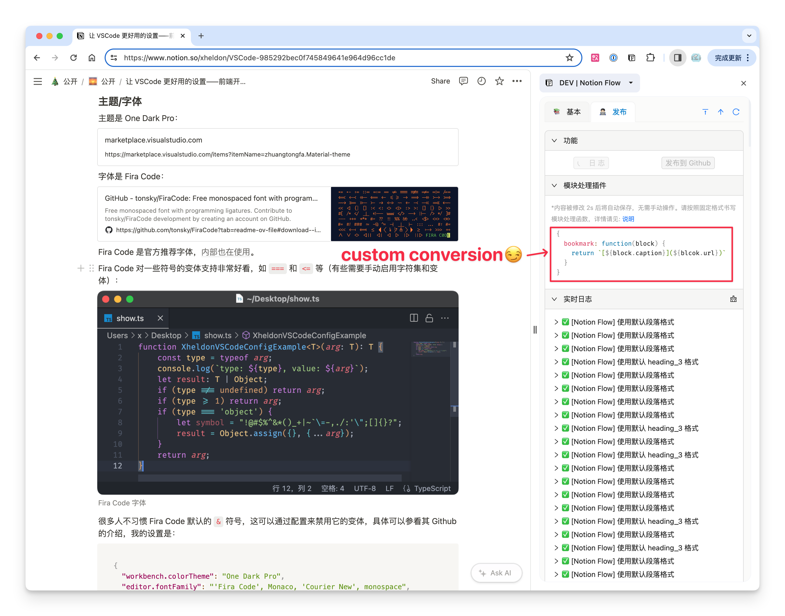
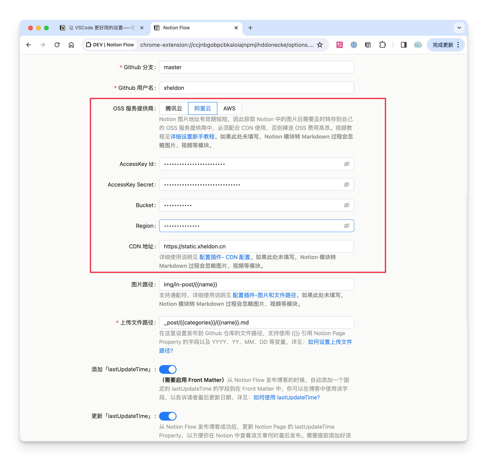
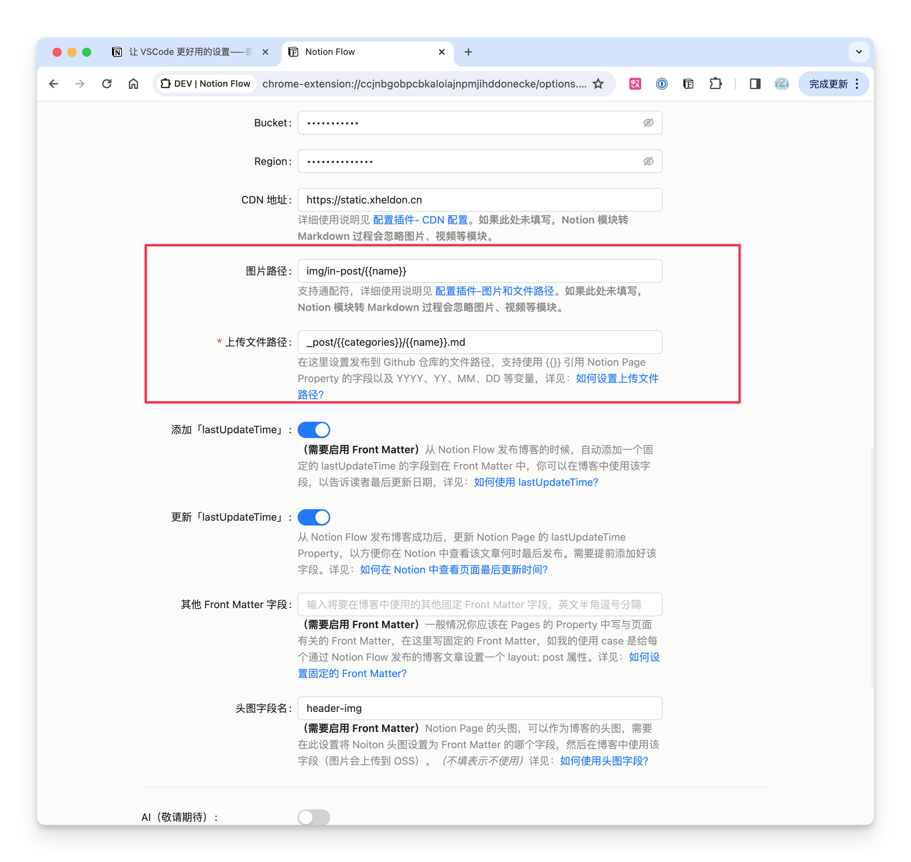
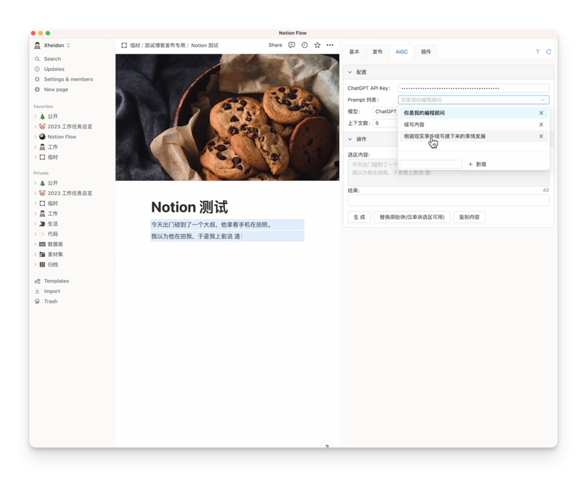

核心功能
从写作导航到一键发布，覆盖基于 GitHub 的博客工作流。
显示 Notion 分级标题
在浏览器右侧边栏实时展示当前 Notion 页面的分级目录，点击即可快速跳转，长文写作导航更顺手。

一键发布到 GitHub
把 Notion 页面以 Markdown 格式同步到你的 GitHub 仓库指定目录。图片引用、Front Matter、Markdown 格式都自动处理，适配 Jekyll、VitePress、Hexo 等基于 GitHub 的博客系统。

自定义模块转换
不满意默认的 Notion → Markdown 规则？只需编写一个转换函数，即可把 Bookmark、Callout、Video 等非标准模块转换成你博客需要的格式。

多种图床支持
内置腾讯云 COS、阿里云 OSS、AWS S3，并支持兼容 S3 API 的自建服务（如 Cloudflare R2、MinIO）。配合 CDN 自动转存 Notion 中的图片与视频。

灵活的路径配置
文件上传路径与图片路径支持引用 Notion Page Properties，以及 {{YYYY}}、{{MM}}、{{name}} 等变量。一次配置，长期复用。

AIGC 支持
通过 OpenAI / Azure OpenAI API 处理选区、替换 Notion 文本块，作为昂贵 Notion AI 的平替，自由度更高、成本更低。
为什么选择 Notion Flow
把繁琐的发布细节交给插件，你只管在 Notion 里专注写作。
自动化繁琐细节
图片转存、Front Matter、Markdown 格式、链接处理，全部在后台自动完成，无需手动搬运。
你的数据你做主
纯前端、非侵入。Token 与密钥只保存在本地浏览器，不经过任何第三方服务器。
稳定可靠（v0.4.5）
分步发布进度、清晰的错误报告与可复制日志，配置页「测试连接」一键校验 Notion / GitHub / OSS。
四步开始使用
一次性配置完成后，之后每篇文章都只需点一下「发布」。
安装插件
从 Chrome 应用商店或 Edge 加载项安装。
填写配置
填入 Notion Token、GitHub 仓库与 OSS，点「测试连接」校验。
打开侧栏
在 Notion 页面点击插件图标，唤出右侧边栏。
一键发布
点「发布到 GitHub」，文章即刻以 Markdown 同步。